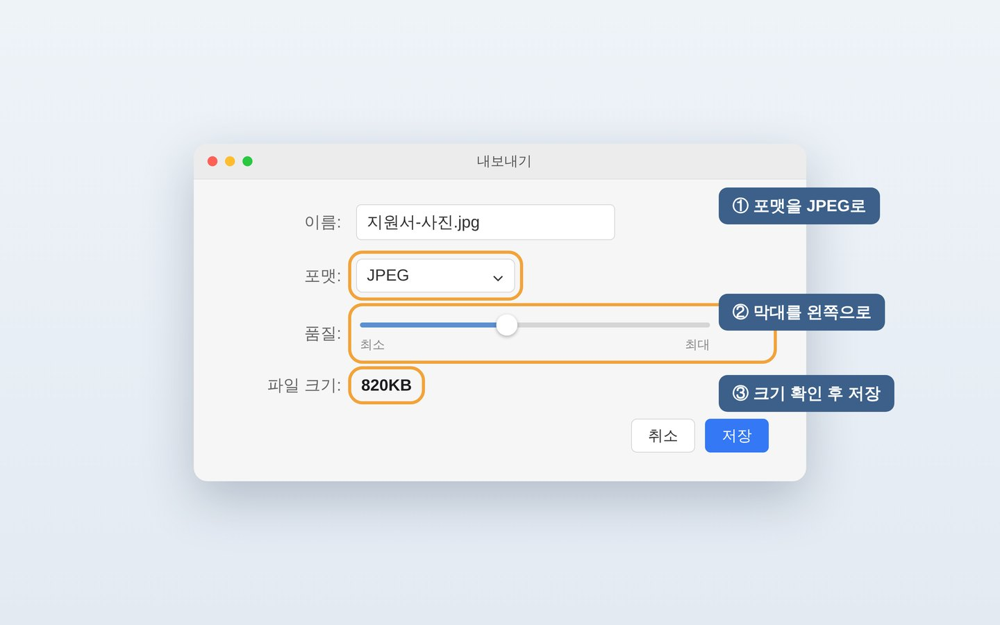

드롭핏 가이드
맥 사진 용량 줄이기
맥에서 사진 용량을 줄이는 가장 쉬운 방법은 기본 앱 '미리보기'에서 파일 → 내보내기를 누르고, 포맷을 JPEG로 고른 뒤 품질 막대를 왼쪽으로 옮겨 저장하는 것입니다. 사진이 여러 장이거나 "1MB 이하"처럼 정해진 용량에 자주 맞춰야 한다면, Finder의 이미지 변환이나 용량 맞추기 기능이 있는 앱이 빠릅니다.
1. 미리보기로 줄이기 (한두 장)
맥에 기본으로 있는 앱이라 따로 설치할 것이 없습니다.
- 사진을 미리보기로 엽니다.
- 메뉴에서 파일 → 내보내기를 누릅니다.
- 포맷을 JPEG로 고르고, 품질 막대를 왼쪽으로 옮깁니다. 아래에 예상 파일 크기가 함께 바뀝니다.
- 제한보다 작아지면 저장합니다.

품질을 너무 많이 낮추면 글자가 흐려질 수 있어서, 제한보다 조금 작아지는 곳에서 멈추면 됩니다. 저장한 파일을 선택하고 ⌘I를 누르면 실제 크기를 확인할 수 있습니다.
2. Finder에서 여러 장 한 번에
- Finder에서 사진을 모두 선택합니다.
- 마우스 오른쪽 버튼 → 빠른 동작 → 이미지 변환을 누릅니다.
- 포맷과 이미지 크기를 고르고 변환합니다.
여러 장을 한 번에 바꿀 수 있지만, "1MB 이하"처럼 용량을 정해서 맞추지는 않습니다. 크기를 고른 뒤 결과 용량을 확인해야 합니다.
3. 정한 용량에 맞춰 한 번에: 드롭핏(Dropfit) 맥 앱
드롭핏(Dropfit for Mac)은 맥 화면에 떠 있는 동그라미에 파일을 끌어다 놓으면 원하는 포맷으로 바꿔 주는 앱입니다. 바뀐 파일은 원본 옆에 저장되고, 파일은 맥 밖으로 나가지 않습니다.

- JPG 최대 용량(예: 1MB)을 정해 둔 칸에 끌어다 놓으면, 그 크기 아래로 맞춰 저장합니다.
- 여러 장이나 폴더째 끌어다 놓아도 한 번에 바뀝니다.
- 아이폰 사진(HEIC)도 끌어다 놓으면 JPG로 바뀝니다.
포맷 변환은 무료입니다. 용량을 정해 두는 프리셋은 Pro 기능(14,900원, 한 번 구입)이고, 처음 14일 동안은 무료로 사용해 보실 수 있습니다.
방법별 비교
| 방법 | 가격 | 여러 장 한 번에 | 정한 용량에 맞추기 | 파일 업로드 |
|---|---|---|---|---|
| 미리보기 | 무료(기본 앱) | 한 장씩 | 품질 막대로 직접 조절 | 없음 |
| Finder 이미지 변환 | 무료(기본 기능) | 됨 | 크기만 고름 | 없음 |
| ImageOptim | 무료(오픈 소스) | 됨 | 무손실 압축 위주 | 없음 |
| Clop | 무료판 · Pro €15 한 번 | 무료판은 한 번에 5개 | 정한 크기 아래로(Fit under size) | 없음 |
| Zipic | 무료판 하루 25장 · $29.99 한 번 | 됨 | 압축 강도 조절 | 없음 |
| 드롭핏 | 변환 무료 · Pro 14,900원 한 번 | 됨(폴더째) | Pro 프리셋에 정한 용량 아래로 | 없음 |
| 온라인 압축 사이트 | 대부분 무료 | 사이트마다 다름 | 사이트마다 다름 | 서버에 올림 |
올리기 전 확인할 것
- 업로드 칸이 JPG만 받는다면, 아이폰 사진(HEIC)은 JPG로 바꿔서 올립니다.
- 사이트마다 1MB를 1,000KB로 보기도, 1,024KB로 보기도 해서, 제한보다 조금 여유 있게 줄이면 안전합니다.
- 신분증이나 서류 사진은 온라인 사이트보다 맥 안에서 줄이는 쪽이 마음이 편합니다.
드롭핏(Dropfit) 맥 앱 · 정식 출시
dropfit.kr에서 보기출처: Apple 미리보기 사용 설명서(이미지 파일 유형 변환), Apple Mac 사용 설명서(Finder 빠른 동작), imageoptim.com, lowtechguys.com/clop, zipic.app. 2026-11-17 확인.